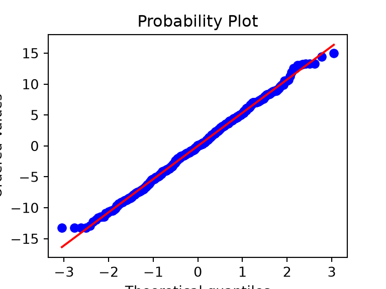
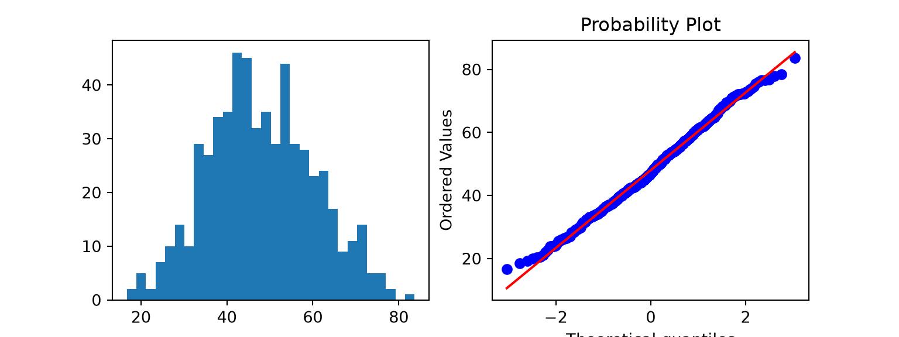

Check whether data look normal, decide which column of the decision table you’re in, and understand p-values, effect sizes and confidence intervals.
The decision table asks two questions: what’s your goal (the row), and what type of data do you have (the column). This page is about the second question, especially the hardest part of it: is a measurement “Gaussian” (normally distributed) enough for the left-hand column?
Why the shape of your data matters
The tests in the first column (t tests, ANOVA, Pearson correlation) compare means, and they assume the data within each group follow a roughly bell-shaped, normal distribution. The tests in the second column (Mann-Whitney, Wilcoxon, Kruskal-Wallis, Spearman) work on ranks. They don’t assume a normal distribution.
Note💡 In plain language
A mean is a fair summary of a bell-shaped pile of numbers. It’s a poor summary of a lopsided one: a few very long hospital stays drag the mean far away from what’s typical. Tests built on means inherit that problem. Rank-based tests only ask “which values are bigger?”, so a few extreme values can’t dominate.
Look first: histograms and QQ plots
Always plot before you test. Here are three variables from the practice data: age, length of stay, and the 1-year PROM score.
age -0.053511
los 1.608903
prom_1yr -0.727089
dtype: float64
Tip🔀 R vs Python: skewness functions
Packages define skewness in slightly different ways (scipy.stats.skew() and the R package e1071 each use their own formula), so the third decimal can differ between them. We wrote the formula out by hand in both languages so the numbers match exactly.
Formal tests: Shapiro-Wilk, and why not to trust it alone
The Shapiro-Wilk test asks: “Could these numbers plausibly come from a normal distribution?” A small p-value means “probably not”. It’s tempting to let it decide: p < 0.05 → rank test, otherwise → t test. That rule fails in both directions.
It’s too sensitive with large samples. Our 600 ages look like a textbook bell curve, yet:
p = 0.173: “no evidence against normality”. Ten values simply can’t reveal the shape, which is exactly when the shape matters most.
Warning⚠️ Watch out: don’t let one p-value choose your test
Decide from the plots, from what you know about the measurement (a bounded score, a count of days), and from the sample size. Use Shapiro-Wilk as supporting evidence, not as the judge. Then say how you decided in your Methods.
Check within groups, not the pooled data
The normality assumption is about the data within each group (or, for regression models, the residuals: what’s left after the model’s prediction). Pooling groups with different centers can make perfectly normal data look non-normal.
Here’s an extreme, made-up example: two groups of 200 values, each exactly normal, 4 standard deviations apart.
group_a <-qnorm(ppoints(200), mean =40, sd =5) # 200 perfectly normal valuesgroup_b <-qnorm(ppoints(200), mean =60, sd =5)shapiro.test(group_a)$p.value # one group alone
[1] 1
shapiro.test(c(group_a, group_b))$p.value # both groups pooled
[1] 9.267769e-11
points = (np.arange(1, 201) -0.5) /200# the same probabilities as R's ppoints(200)group_a = stats.norm.ppf(points, loc=40, scale=5) # 200 perfectly normal valuesgroup_b = stats.norm.ppf(points, loc=60, scale=5)print(stats.shapiro(group_a).pvalue) # one group alone
0.999999999999995
print(stats.shapiro(np.concatenate([group_a, group_b])).pvalue) # both groups pooled
9.26776946181564e-11
Each group alone passes easily (p ≈ 1). Pooled, p < 0.001: the histogram of the pooled values has two humps, which is not what a normal distribution looks like.
In real data the groups are usually much closer together. BMI differs by only about a third of a standard deviation between THA and TKA patients, so pooling barely matters. What you see instead is Shapiro-Wilk’s verdict bouncing around 0.05 depending on how you slice the same data:
print(stats.shapiro(cohort["bmi"]).pvalue) # pooled
0.04425461560416669
for procedure, group in cohort.groupby("procedure"): # each group on its ownprint(procedure, stats.shapiro(group["bmi"]).pvalue)
THA 0.05134144815391971
TKA 0.12354544393057915
# residual = BMI minus its group's meanresiduals = cohort["bmi"] - cohort.groupby("procedure")["bmi"].transform("mean")print(stats.shapiro(residuals).pvalue)
0.30629201181168864
fig, ax = plt.subplots(figsize=(4, 3))qq = stats.probplot(residuals, plot=ax) # naming the result keeps its numbers out of the outputplt.show()

Pooled p = 0.044, THA alone 0.051, TKA alone 0.124, residuals 0.306: four slices of the same data, on both sides of 0.05, while the QQ plot is a near-perfect straight line. That’s the lesson of the previous section again: decide from the plots and what you know about the measurement, not from one p-value.
How much does normality matter?
Less than you might think, once groups are reasonably large. Tests on means rely on the average being roughly normal, not on every individual value. Thanks to the central limit theorem, averages of about 30 or more values are close to normal even when the values themselves are skewed.
A practical guide:
About 30 or more per group, moderate skew, no wild outliers: t tests and ANOVA are fine. With very skewed data, the rank test is still often the better summary.
Strong skew or extreme outliers: use the rank column.
Small groups (under about 15 per group): plots can’t show the shape, and no test has much power. Choose from what you know about the measurement: the rank column for skewed or ordinal measures, the Gaussian column for measurements known to be roughly normal. Expect wide confidence intervals either way.
Ordinal scales, or a ceiling or floor: use the rank column whatever the sample size (below).
Note🔍 Under the hood: the central limit theorem
If you take many random samples of size n from almost any distribution and compute each sample’s mean, those means form a distribution that gets closer to normal as n grows. Its spread shrinks in proportion to 1/√n. t tests are built on the distribution of the mean, which is why they tolerate non-normal raw data when n is large. “About 30” is a rule of thumb, not a law: the more skewed the data, the larger n needs to be.
Skew, ceilings and transformations
A common fix for right skew is to analyze the logarithm of the values. For length of stay we have to use log(days + 1), because log(0) doesn’t exist.
The log helps (skewness falls from about 1.6 to 0.6), but nearly half the stays are 0 days and no transformation can spread out a pile of identical values. Results on a log scale are also harder to explain (“a 0.3 difference in log(days + 1)”). Here the rank-based tests are simpler and more honest.
The same goes for the ceiling: 17% of patients score the maximum at 1 year, and no transformation can tell those patients apart. Compare groups with rank-based tests, or report the proportion reaching the ceiling (or a clinically important improvement) as a yes/no outcome.
Ordinal data always go in the rank column
Ordinal data have an order but no fixed spacing: satisfaction from 1 (“very dissatisfied”) to 5 (“very satisfied”), ASA class, pain “none / mild / moderate / severe”. The step from 4 to 5 isn’t necessarily the same size as the step from 1 to 2, so averages are hard to interpret.
Report ordinal data as counts and percentages, or as a median (IQR), and compare groups with rank-based tests. Never compute a t test on Likert scores, however many patients you have.
Paired or unpaired? Matched or unmatched?
The decision table’s rows also ask whether your groups are independent or paired/matched.
Unpaired (independent): different patients in each group. THA vs TKA; Site A vs Site B; men vs women.
Paired: the same patients measured twice, or natural pairs. Pre-op vs 1-year PROM in the same patients; left vs right knee in bilateral patients; two raters measuring the same X-rays.
Matched: each patient in one group has been chosen to resemble a patient in the other group (by age, sex, BMI…). Treat matched sets like pairs.
Bilateral patients need care. In our cohort, 80 patients appear twice, once for each side, usually in the same group. Their two procedures share the same person’s age, sex and health, so they are not independent. Tests that treat every row as a separate patient are then a little overconfident (p-values too small, CIs too narrow). Either analyse one procedure per patient (for example, the first), or use methods built for clustered data, such as mixed models. Say which you did.
Pairing matters because measurements on the same patient are related. A paired analysis uses each patient as their own control, which removes the patient-to-patient variation and usually gives a more precise answer. Analyzing paired data as if unpaired is one of the most common mistakes in the literature.
From your question to a test
flowchart TD
A[What is your goal?] --> B[Describe one group]
A --> M[Compare one group to a hypothetical value]
A --> C[Compare groups or measurements]
A --> D[Association or prediction]
C --> E{Same patients or matched?}
E -->|No| F[Unpaired rows]
E -->|Yes| G[Paired / matched rows]
B --> H{What type of outcome?}
M --> H
F --> H
G --> H
D --> H
H -->|Measurement, roughly normal within groups| I[Gaussian column]
H -->|Strongly skewed, bounded, or ordinal| J[Rank column]
H -->|Yes / no| K[Binomial column]
H -->|Time until an event| L[Survival column]
Then find your row and column in the decision table. Some worked examples from typical orthopaedic research questions:
Question
Row
Column
Test
Do TKA patients have a higher BMI than THA patients?
Every test on this site reports three things. They answer different questions, and a good Results section gives all three.
The effect size answers how big? For example, the difference between two means.
The 95% confidence interval (CI) answers how sure are we about that size? It’s the range of effect sizes compatible with the data.
The p-value answers how surprising would data like these be if there were really no difference at all? It doesn’t measure the size or importance of an effect.
Here’s all three for BMI in TKA vs THA, using the unpaired (Welch’s) t test from page 6:
bmi_test <-t.test(bmi ~ procedure, data = cohort) # Welch's t test (R's default)bmi_test
Welch Two Sample t-test
data: bmi by procedure
t = -4.0705, df = 580.09, p-value = 5.341e-05
alternative hypothesis: true difference in means between group THA and group TKA is not equal to 0
95 percent confidence interval:
-2.647347 -0.924101
sample estimates:
mean in group THA mean in group TKA
29.46185 31.24758
difference <-unname(bmi_test$estimate[2] - bmi_test$estimate[1]) # TKA minus THAci <--rev(bmi_test$conf.int) # flip to TKA minus THAtibble(difference = difference, ci_low = ci[1], ci_high = ci[2], p = bmi_test$p.value)
# A tibble: 1 × 4
difference ci_low ci_high p
<dbl> <dbl> <dbl> <dbl>
1 1.79 0.924 2.65 0.0000534
difference 1.785724
ci_low 0.924101
ci_high 2.647347
p 0.000053
dtype: float64
TKA patients had a higher BMI than THA patients (mean difference 1.8 kg/m², 95% CI 0.9 to 2.6; p < 0.001).
Is a difference of 1.8 kg/m² clinically important? The p-value can’t tell you. Ask whether a difference anywhere in the CI (0.9 to 2.6 kg/m²) would change risk or management, for example complication rates. That’s clinical judgment, not statistics. Statistically significant means only that data like these would be unusual if there were really no difference. It doesn’t mean the difference is large or important.
Warning⚠️ Watch out: two classic misreadings
“p = 0.20, so there’s no difference.” No. It means the data couldn’t rule out zero. Look at the CI: if it runs from “harmful” to “very helpful”, the study was too small to say.
“p < 0.001, so the effect is large.” No. With enough patients, tiny differences get tiny p-values. Look at the effect size and CI.
Tip🔀 R vs Python: which group comes first
R’s t.test(bmi ~ procedure) subtracts in alphabetical order of the groups (THA minus TKA). scipy’s ttest_ind(tka, tha) subtracts the second argument from the first. Same answer, opposite sign. Always say which group was subtracted from which, as we did above.
For PROMs, judge differences against the minimal clinically important difference (MCID): the smallest change patients notice as meaningful. Published MCIDs vary with the study and the method used to derive them, so cite the one you use. Be careful how you use it: an MCID is a within-patient threshold for one person’s change. A difference between two groups’ averages that is smaller than the MCID doesn’t prove no patient benefited, and a larger one doesn’t mean every patient did. Comparing the proportion of patients in each group who reached the MCID is often the clearer analysis.
Exercises
1. Draw a histogram and a QQ plot of the pre-op PROM score. Is it closer to normal than the 1-year score? Why might that be?
preop = proms[(proms["visit"] =="preop") & proms["prom_score"].notna()]fig, axes = plt.subplots(1, 2, figsize=(8, 3))axes[0].hist(preop["prom_score"], bins=30)qq = stats.probplot(preop["prom_score"], plot=axes[1]) # naming the result keeps its numbers out of the outputplt.show()

print(skewness(preop["prom_score"]))
0.14319820568938835
Much closer to normal: skewness about 0.1 and the QQ points follow the line. Before surgery, scores sit in the middle of the scale, far from the ceiling. After a successful operation many patients hit the maximum, which creates the ceiling.
2. A fellow wants to compare operative time between surgeons S1 and S2, about 40 cases each. The histogram is fairly symmetric, with a few long cases. Which column of the decision table would you use, and how would you justify it in the Methods?
TipSolution
The Gaussian column (an unpaired t test, Welch’s version) is reasonable. With about 40 cases per group and a roughly symmetric shape, the t test is robust. Check the QQ plot within each surgeon, and check that the few long cases aren’t extreme outliers. Methods: “Operative time was approximately normally distributed within each group on visual inspection of histograms and QQ plots, and was compared with Welch’s t test.” If the long cases were extreme, a Mann-Whitney test would be the safer choice; say so.
3. A study reports: “1-year KOOS JR was 2.1 points higher with the new implant (95% CI −1.5 to 5.7; p = 0.25).” Suppose the MCID for KOOS JR is 14 points. Write one sentence interpreting this result.
TipSolution
“The study found no clear difference in 1-year KOOS JR between implants: the estimate (2.1 points) and the whole 95% CI (−1.5 to 5.7) are far smaller than the 14-point MCID, so a large average benefit of the new implant is unlikely.”
This is stronger than “not significant”: the CI rules out a large average difference. Strictly, the MCID is a within-patient threshold, so the clearest follow-up analysis compares the proportion of patients in each group who improved by at least 14 points.